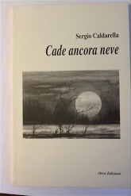
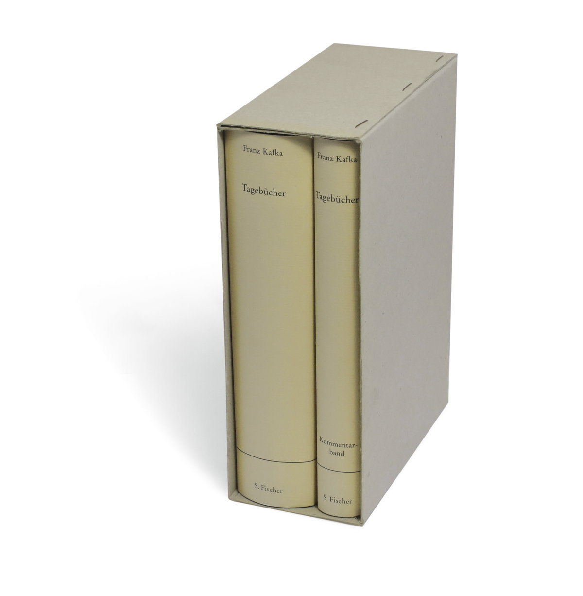

28:10 · 4 OPERE
Postfazione al libro “Cade ancora neve”.
Il filo del discorso
La postfazione a Cade ancora neve riflette sul tentativo di giustificare la scrittura e sull’impossibilità di tradurre interamente l’esperienza in parole. Le immagini iniziali descrivono una socialità ricca di rumore e povera di comunicazione, alla quale viene opposto il lavoro paziente dello scrittore. L’aneddoto dell’enigma rivolto a Omero mostra come il linguaggio possa indirizzare il pensiero e nascondere altre possibilità. La riflessione si sposta poi sulla responsabilità personale, con richiami ai Fratelli Karamazov e alle Memorie del sottosuolo, e sul rischio di affidare al denaro la giustificazione dell’esistenza. Nell’ultima parte la scrittura appare come esposizione della propria vulnerabilità: Pessoa e Kafka accompagnano il confronto fra sentimento, finzione e annotazione. La chiusura presenta il libro come testimonianza di ferite che l’autore ha scelto di lasciare aperte.
I libri nel discorso

Cade ancora neve
Note sul riferimento
Copertina: Oros Edizioni · copertina fotografata nel video dell’autore
Titolo a 00:03–00:04, seguito dall’annuncio della postfazione e del suo titolo.

I fratelli Karamazov
Note sul riferimento
Copertina: Newton Compton · I Mammut Gold · edizione di riferimento
Dostoevskij è nominato a 13:58; la citazione sulla responsabilità del giudice prosegue fino al titolo I fratelli Karamazov a 14:33–14:41.

Memorie del sottosuolo
Note sul riferimento
Copertina: Theoria · Futuro Anteriore, 2022 · edizione di riferimento
Il cognome Dostoevskij è seguito a 16:09–16:13 dal titolo Memorie del sottosuolo.

Diari
Note sul riferimento
Copertina: S. Fischer, 2008 · Tagebücher · edizione tedesca di riferimento con commento
Il passo sullo scritto e sulla sensazione comincia a 24:55; l’attribuzione a Franz Kafka e ai Diari è esplicita a 25:11–25:17.